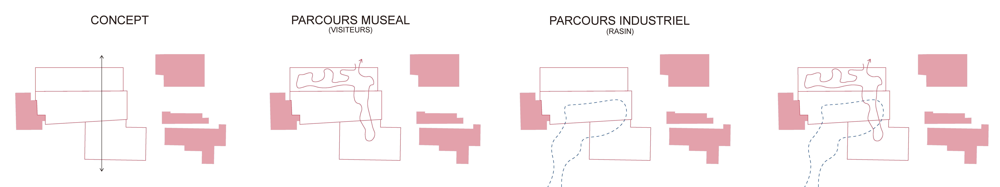
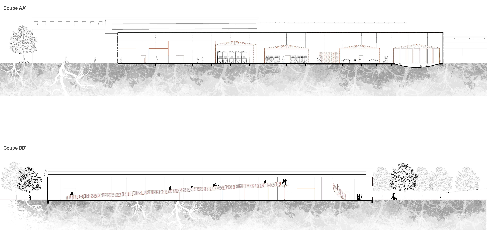
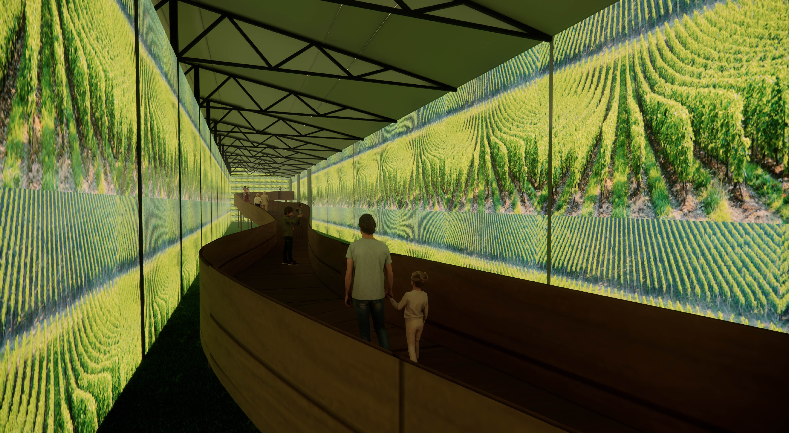
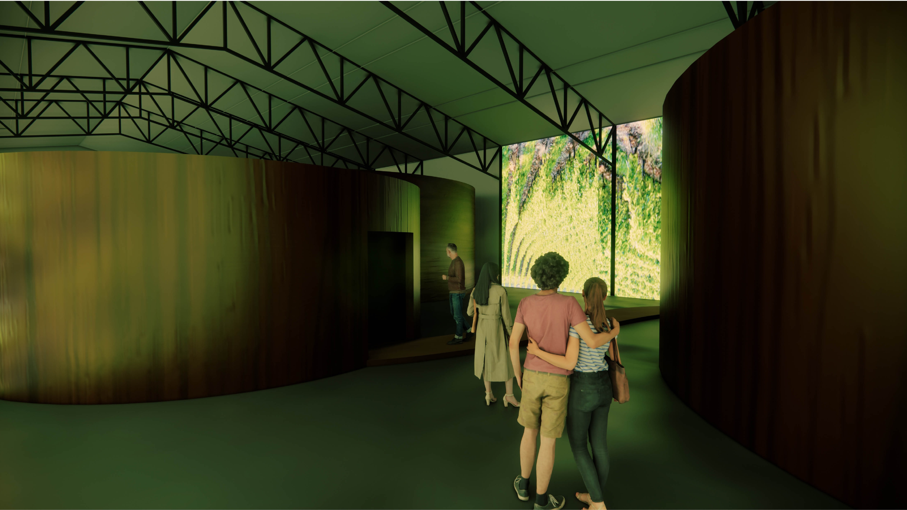
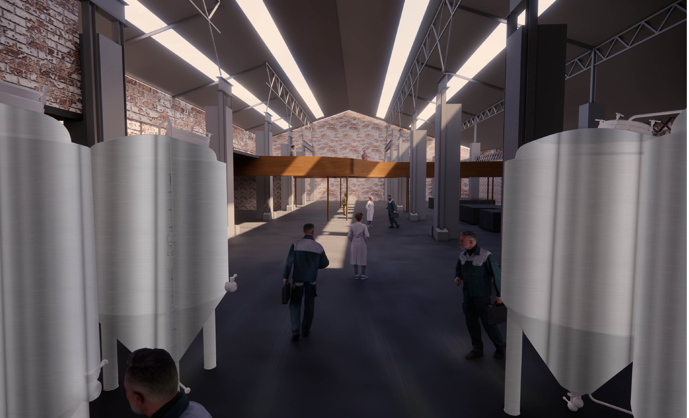
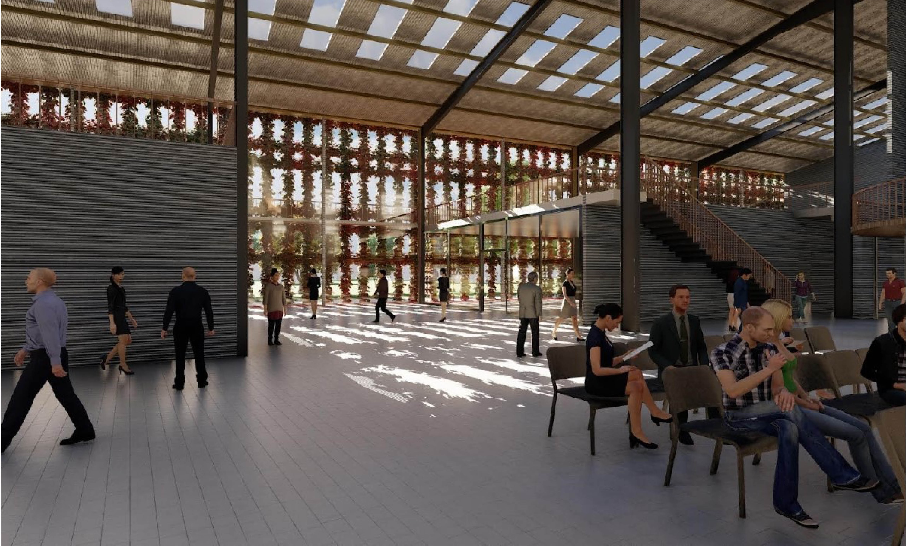

Grape Escapes
Projet de réhabilitation d’une fonderie à une centre d’interprétation du vin
Ce projet propose la réhabilitation d’une ancienne fonderie en un centre d’interprétation du vin à Bléré, en transformant un patrimoine industriel en équipement culturel et paysager.
L’intervention articule production, exposition et parcours immersif, tout en conservant la mémoire constructive du lieu et en mettant en valeur sa relation au paysage viticole environnant.
Le projet explore ainsi la manière dont un bâtiment existant peut accueillir de nouveaux usages tout en révélant l’épaisseur historique, matérielle et symbolique du site.







